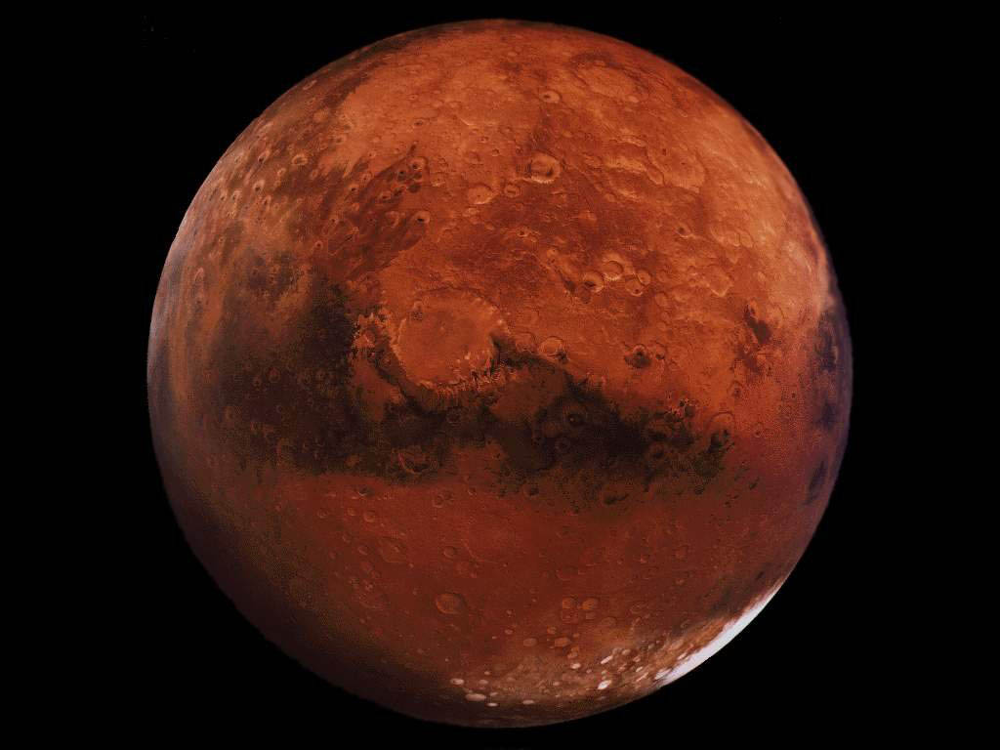
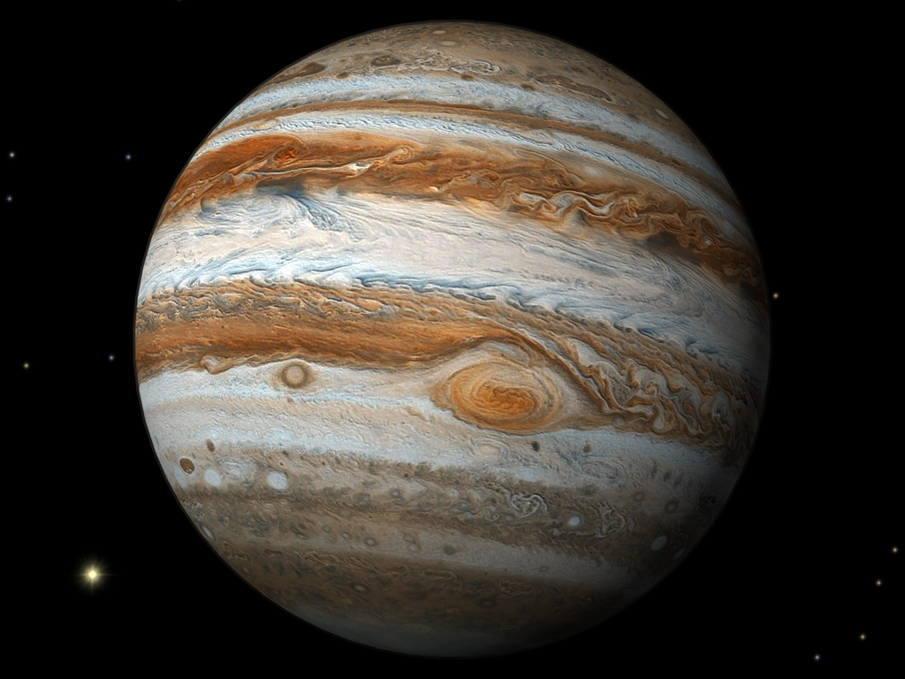

-
Меркурий — самая близкая к Солнцу планета
-
Вене́ра — вторая планета Солнечной системы.
-
Земля́ — третья от Солнца планета
- 
Марс — четвёртая по удалённости от Солнца и седьмая по размерам планета Солнечной системы...
- 
Юпитер — пятая планета от Солнца, крупнейшая в Солнечной системе
-
Сатурн — шестая планета от Солнца и вторая по размерам планета в Солнечной системе

Ура́н — планета Солнечной системы, седьмая по удалённости от Солнца

Непту́н — восьмая планета Солнечной системы.